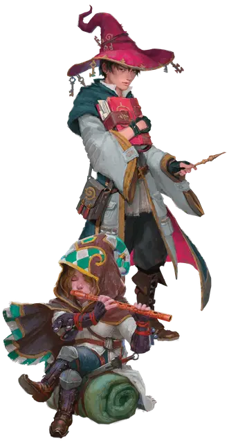

Потерявшийся в царстве фей
Feylost

Ребёнком вы пропали со своего домашнего плана и выросли уже в Царстве Фей. Возможно, вы были унесены доброй феей, верящей, что вы были предназначены для великих дел. Возможно, во время прогулки в лесу на закате вы случайно забрели на фейский перекресток. Может быть, вы были похищены злой Феей, но сбежали из плена. Какова бы ни была причина, вы постепенно подпали под магию Царства Фей и узнали немного о природе живущих здесь непоседливых ловкачей.
Вы не вернулись домой тем же, кем были: вас преследовала мысль о том, что Царство Фей - зеркальный мир, спрятанный под другим углом взгляда - лишь на расстоянии волоска от вас. С каждым днём воспоминания о Царстве тускнеют, но ваше сердце захватывает страх и радость в предвкушении дня, когда вы вернетесь на План Фей, ваш дом вдали от дома.
Владение навыками: Обман, Выживание
Владение инструментами: Музыкальные инструменты (один вид на ваш выбор)
Языки: Один на выбор (Эльфийский, Гномий, Гоблинский или Сильван)
Снаряжение: Музыкальные инструменты (один вид на ваш выбор), комплект дорожной одежды, три безделушки (каждая определяется броском по таблице Безделушки Страны Фей) и кошель с 8 зм
Умение: связь с царством фей
Жители Царства Фей считают вас своим благодаря вашим манерам и знанию обычаев фей. Дружественные феи склонны прийти вам на помощь, если вы потерялись или вам нужна помощь в Царстве Фей.
Метка фей
Ваше пребывание в Царстве фей немного изменило вас, оставив небольшую отметину, определяемую броском по таблице Меток Фей.
| к8 | Метка Фей |
| 1 | В ваших глазах крутятся водовороты переливающихся цветов |
| 2 | Вы источаете сладкий аромат, как у нектара или мёда |
| 3 | У вас есть усы, похожие на кошачьи |
| 4 | Ваши уши покрыты клочками шерсти |
| 5 | Ваша кожа искрится в лунном свете |
| 6 | В вашем присутствии цветы распускаются или вянут (на ваш выбор) |
| 7 | Ваши волосы - ежевичные лозы, отрастающие через час после стрижки |
| 8 | У вас есть хвост, как у собаки или другого животного |
Гость из царства фей
Дух из Царства Фей может нанести вам визит, когда вы во сне или глубоком трансе, по желанию ДМа. Определите форму духа броском по таблице Гостя из Царства. Такие визиты не могут причинить вам вред, длятся от минут до часов, и вы помните каждый из них по пробуждению. Разговоры с гостем могут содержать как сообщения и откровения, так и бессмыслицу и ложную информацию - по решению ДМа. Эти беседы проводятся на языке, который вы понимаете, даже если гость обычно не говорит на нём.
| к8 | Гость |
| 1 | Пробуждённое существо (Зверь или простое растение под действием заклинания пробуждение разума [awaken] ) |
| 2 | Кентавр [centaur] |
| 3 | Дриада [dryad] |
| 4 | Волшебный дракончик [faerie dragon] |
| 5 | Пикси [pixie] |
| 6 | Сатир [satyr] |
| 7 | Спрайт [sprite] |
| 8 | Единорог [unicorn] |